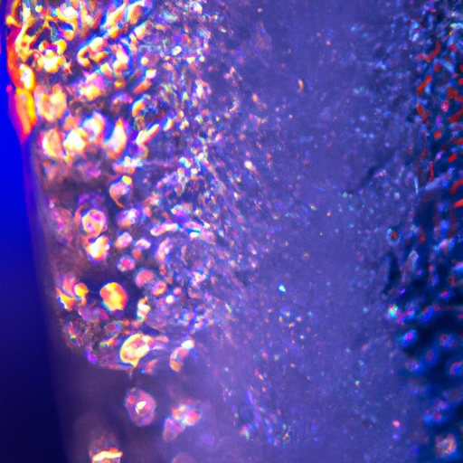

Hydrological Cycle
Hydrological Cycle
Evaporation and transpiration
Condensation and cloud formation
Precipitation and rain patterns
Surface runoff and river systems
Groundwater flow and aquifers
Snowmelt and glacial processes
Water storage in oceans lakes and reservoirs
Soil moisture and infiltration
Water balance and budgeting
Human impact on the hydrological cycle
Marine Ecosystems
Marine Ecosystems
Coral reefs and their biodiversity
Mangrove forests as coastal protectors
Ocean currents and climate regulation
Deepsea habitats and extremophiles
Intertidal zones and estuarine ecosystems
Marine food webs and trophic levels
Freshwater Ecosystems
Freshwater Ecosystems
Conservation efforts for marine species
Marine biogeochemical cycles
Impact of global warming on oceans
Water Resource Management
Water Resource Management
Rivers streams and creeks ecosystems
Lakes ponds wetlands habitats
Biodiversity in freshwater environments
Aquatic plants role in oxygenation
Freshwater fish species diversity
Invasive species impact on freshwater systems
Pollution threats to freshwater sources
Conservation strategies for freshwater biomes
Role of wetlands in flood control
Importance of riparian buffers
Cultural Significance of Water
Cultural Significance of Water
Sustainable water use practices
Desalination technologies for fresh water supply
Wastewater treatment processes
Rainwater harvesting techniques
Management of water during drought conditions
Transboundary water resource politics
Infrastructure for water distribution
Agricultural irrigation efficiency
Urban water demand management
Impact of climate change on water resources
About Us
Contact Us
Deepsea habitats and extremophiles
Rainwater Harvesting
Deepsea habitats are mysterious realms where sunlight barely penetrates, and extremophiles thrive in conditions once thought to be inhospitable for life.
Intertidal zones and estuarine ecosystems
.
Water Treatment
These environments, found at great depths within the ocean's abyssal plains and hydrothermal vents, challenge our understanding of biology.
At the heart of these habitats lie extremophiles—organisms that have adapted to survive extreme pressure, darkness, and temperatures.
Deepsea habitats and extremophiles - Ocean Conservation
Desalination
These creatures often possess unique biochemical mechanisms allowing them to flourish in such harsh settings.
Hydrothermal vents are particularly fascinating deepsea features, spewing mineral-rich water heated by the Earth's magma.
Deepsea habitats and extremophiles - Aquaculture
Ocean Conservation
Water Pollution
Water Law and Policy
Wetlands
Wastewater Treatment
Hydroponics
Water Cycle
Here, extremophiles like thermophilic bacteria harness chemicals through chemosynthesis—a stark contrast to the photosynthesis-driven life on the surface.
The pitch-black environs of the deep sea also host a wealth of other organisms ranging from giant tube worms to peculiar fish species with bioluminescent capabilities—an adaptation for attracting prey or mates in total darkness.
Studying deepsea extremophiles is not only captivating for its own sake but also offers insights into potential extraterrestrial life forms and novel biotechnological applications.
Deepsea habitats and extremophiles - Water Treatment
Water Pollution
Water Law and Policy
Wetlands
Wastewater Treatment
Hydroponics
Water Conservation
Aquaculture
Waterborne Diseases
Rainwater Harvesting
The enzymes from these organisms could revolutionize medicine and industry.
In conclusion, deepsea habitats showcase nature's resilience while highlighting extremophiles' remarkable adaptations. They represent uncharted frontiers both for scientific inquiry and our imagination.

Hydrological Cycle
Check our other pages :
Marine biogeochemical cycles
Desalination technologies for fresh water supply
Ocean currents and climate regulation
Wastewater treatment processes
Frequently Asked Questions
What are deep-sea habitats and why are they important for understanding the biodiversity of marine life?
Deep-sea habitats are environments located at depths below 200 meters, where sunlight does not penetrate. They include abyssal plains, hydrothermal vents, cold seeps, and deep-sea trenches. These habitats are important for understanding marine biodiversity because they host unique ecosystems with a wide variety of organisms adapted to extreme conditions such as high pressure, low temperature, and absence of light. Studying these species helps scientists to learn about the limits of life on Earth and informs conservation efforts.
What are extremophiles and what types can be found in deep-sea habitats?
Extremophiles are organisms that thrive in conditions that would be detrimental or lethal to most life forms. In deep-sea habitats, you can find thermophiles that tolerate high temperatures near hydrothermal vents, piezophiles (also known as barophiles) that withstand extreme pressures within oceanic trenches, and chemolithoautotrophs that obtain energy by oxidizing inorganic compounds like hydrogen sulfide emanating from seafloor vents or seeps.
How do extremophiles adapt to the harsh conditions found in deep-sea environments?
Extremophiles have evolved various biochemical and physiological adaptations to survive under extreme conditions. For example, they may produce special proteins called extremozymes that remain active in unusual conditions; their cell membranes might contain unique fatty acids to maintain fluidity under high pressure or low temperature; and they often possess efficient DNA repair mechanisms to cope with potential damage caused by their environment.
Why is the study of deep-sea extremophiles significant for science and technology?
The study of deep-sea extremophiles is significant for multiple reasons. Biologically, it provides insights into evolutionary processes and lifes adaptability. It also expands our knowledge about the origins of life on Earth and possibly other celestial bodies. Technologically, enzymes from extremophiles can lead to industrial applications such as biofuels production or bioremediation due to their stability under harsh conditions. Additionally, these studies contribute to advancements in fields like pharmaceuticals where extremophile-derived compounds may have novel therapeutic properties.